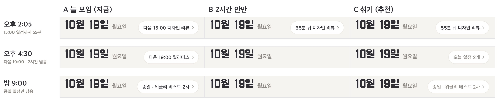

받은함 일정 알약 — A·B·C
같은 날 세 시각(오후 2:05 · 4:30 · 밤 9:00). 시험 일정: 종일 위클리 베스트 · 15시 디자인 리뷰 · 19시 필라테스. 옆으로 밀어 보세요.

A 늘 보임(지금) · B 2시간 안만(그 밖엔 사라짐) · C 섞기(2시간 안은 진하게, 그 밖엔 회색으로 늘)
같은 날 세 시각(오후 2:05 · 4:30 · 밤 9:00). 시험 일정: 종일 위클리 베스트 · 15시 디자인 리뷰 · 19시 필라테스. 옆으로 밀어 보세요.

A 늘 보임(지금) · B 2시간 안만(그 밖엔 사라짐) · C 섞기(2시간 안은 진하게, 그 밖엔 회색으로 늘)